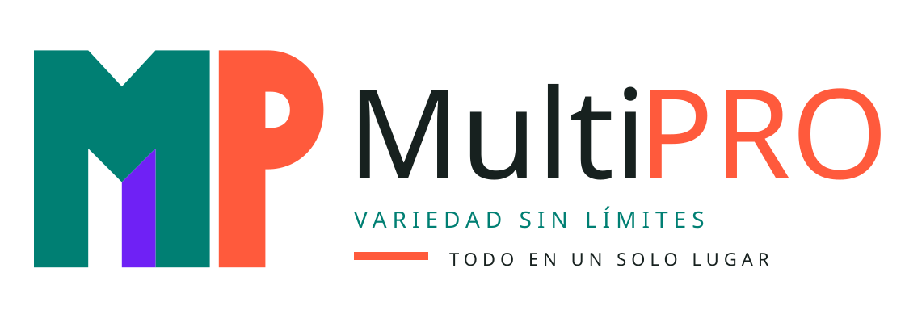
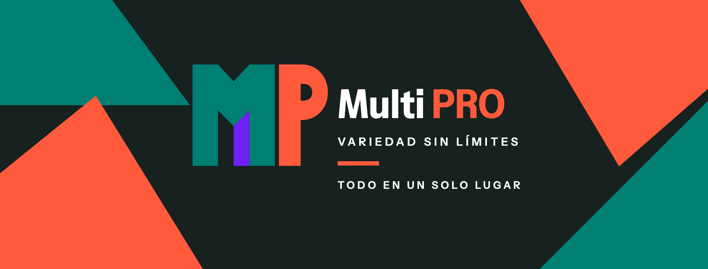

Usa
- El símbolo solo cuando el espacio sea pequeño.
- El logo horizontal en catálogos, facturas y presentaciones.
- Instrument Sans en pesos 700, 600 y 400.
- Los SVG para impresión, rótulos y formatos grandes.
- Contraste alto y fondos planos.

Un sistema directo, reproducible y enérgico para presentar productos de distintas categorías bajo una sola marca.
Estas son las dos piezas listas para subir. No añadas texto ni efectos adicionales.

Usa la versión normal sobre fondos blancos o claros. La invertida está preparada para fondos oscuros.

El verde y el coral sostienen la identidad; el violeta aparece como un acento pequeño y controlado dentro del símbolo.
#007F73
#FF5A3C
#6F21F5
#17211F
#FFFFFF
Una sola familia sostiene el logotipo, mensajes comerciales, categorías, precios y fichas de producto.
Multi PRO
Variedad sin límites
Todo en un solo lugar
Productos para distintas necesidades · Cotización C$ 18,450.00
La consistencia hace que el sistema se perciba profesional. Estas reglas aplican a redes, catálogos, cotizaciones y rotulación.
Todos los enlaces funcionan sin conexión porque los recursos están incluidos en esta misma carpeta.
Primero claridad. Después consistencia. Los efectos no sustituyen ninguna de las dos.
{kind=link}
{kind=link}
{kind=link}
{kind=link}
{kind=link}
{kind=link}
{kind=link}